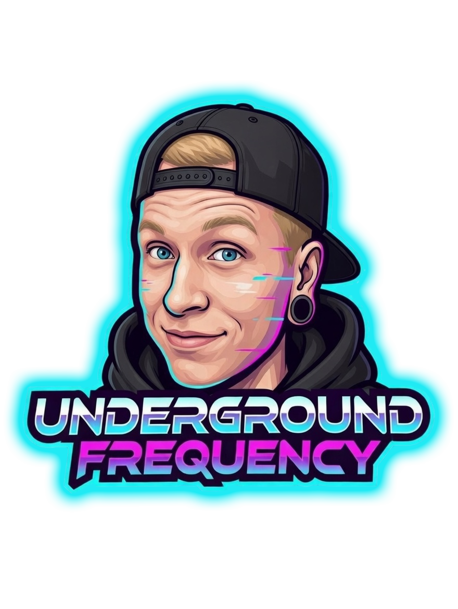
I'm Rob, and I've been in the scene since 2012. Started as a club photographer, got pulled into the booth by two DJs, and never looked back.
Now, I'm pushing sound and visuals out of Frisco, Texas. Design work is an extension of the same creative drive on the decks: futuristic, bold, built for the underground.
I finished my Bachelor of Multimedia & Arts while running the Underground Frequency identity across Twitch, social media, and merch branding.
Every pixel is a signal. Every set is a transmission.
Event branding, cover art, social, and merch. Built across the Underground Frequency visual system.
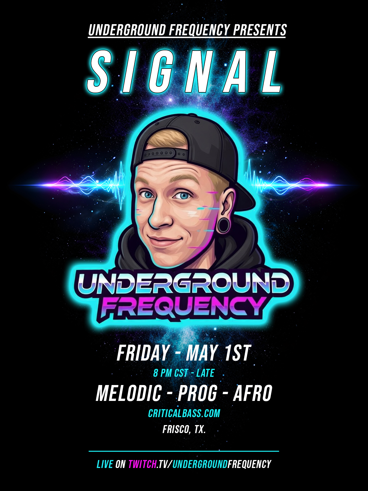
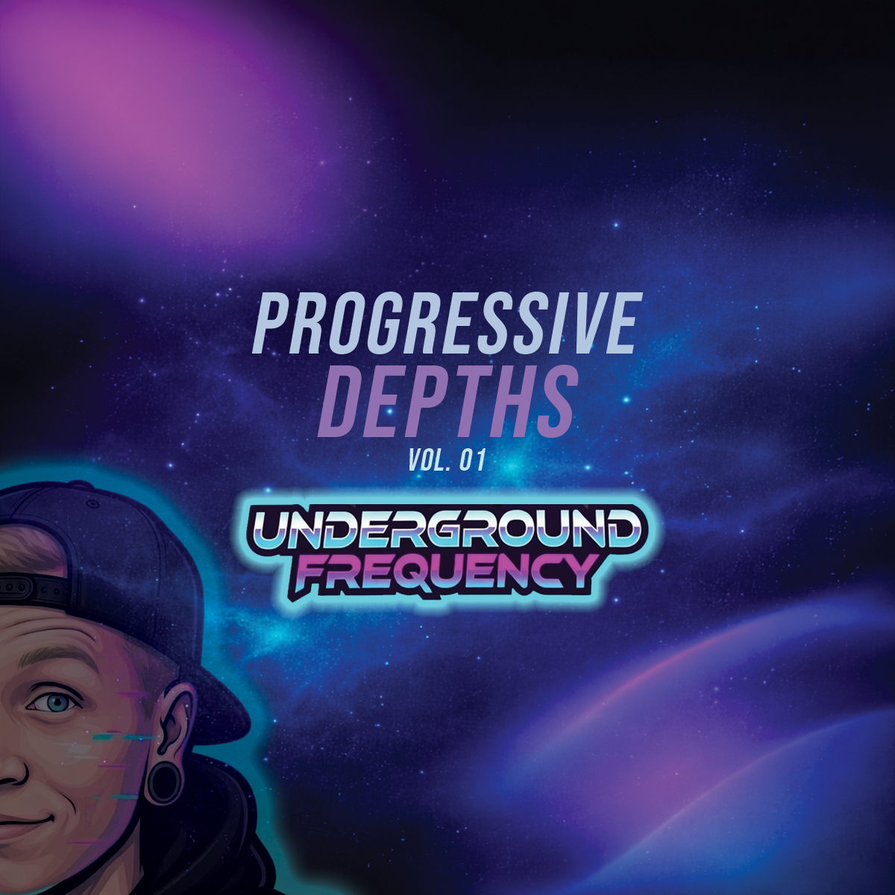
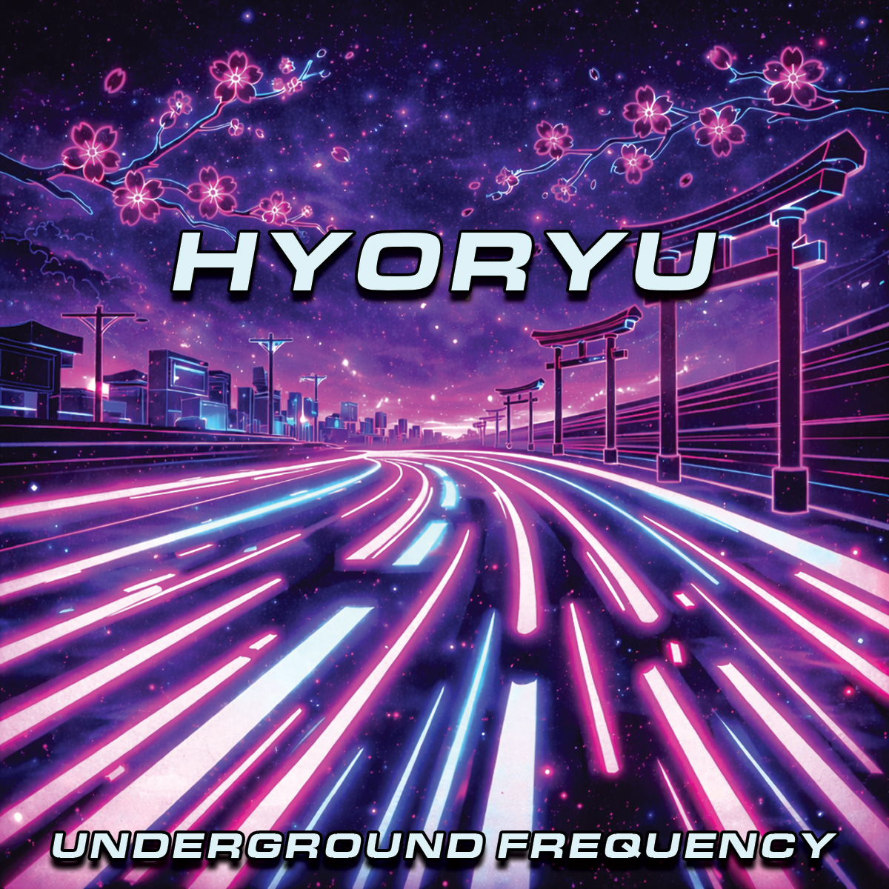
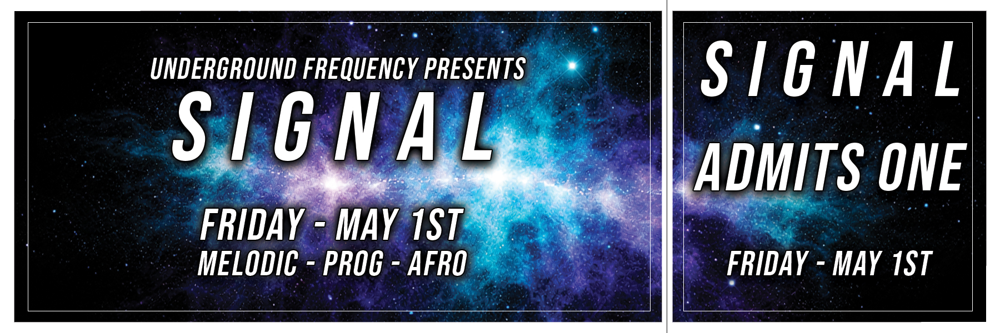
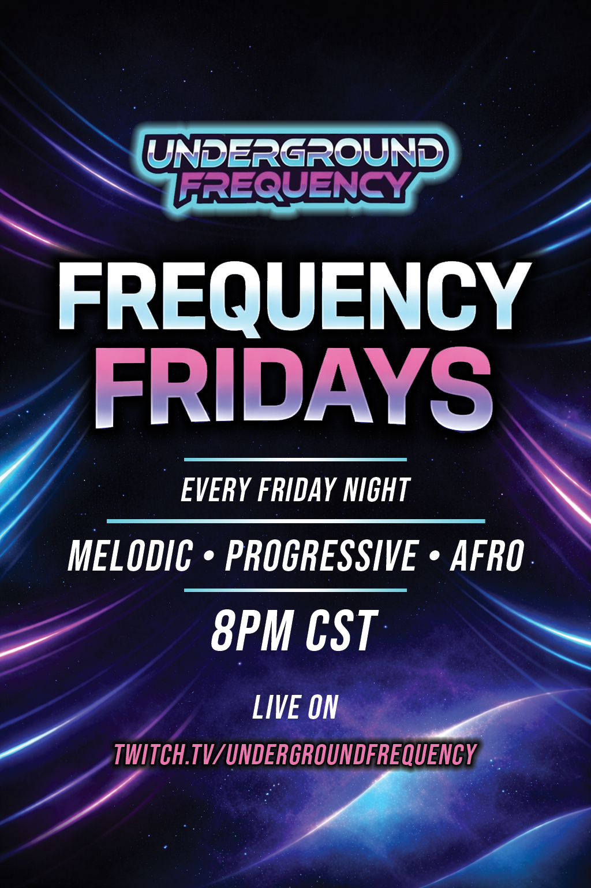
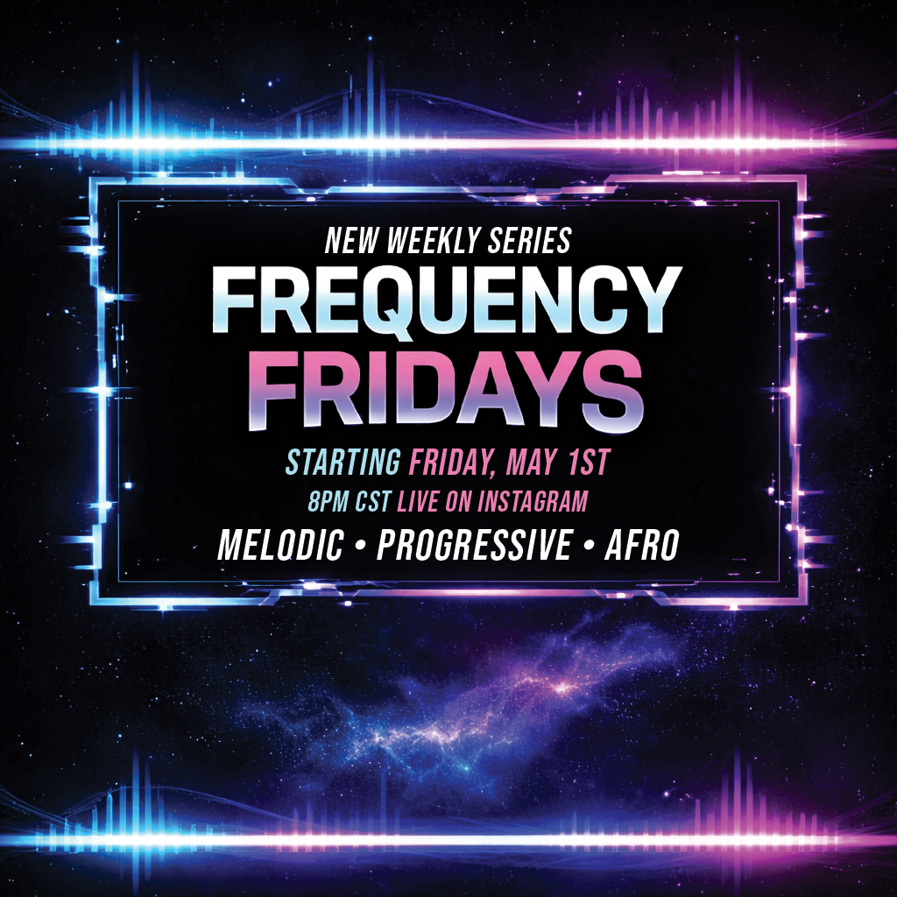
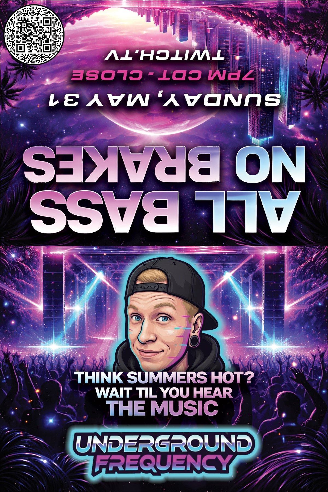
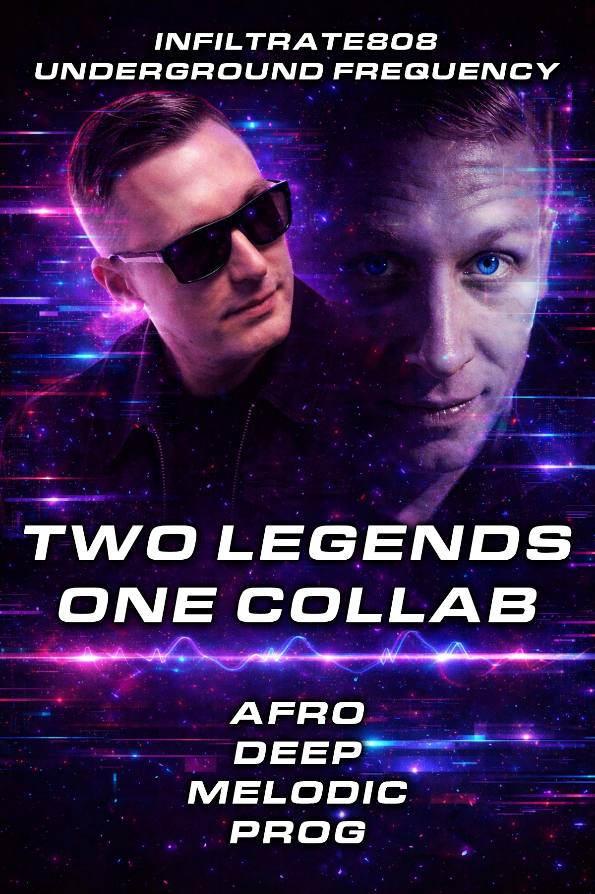
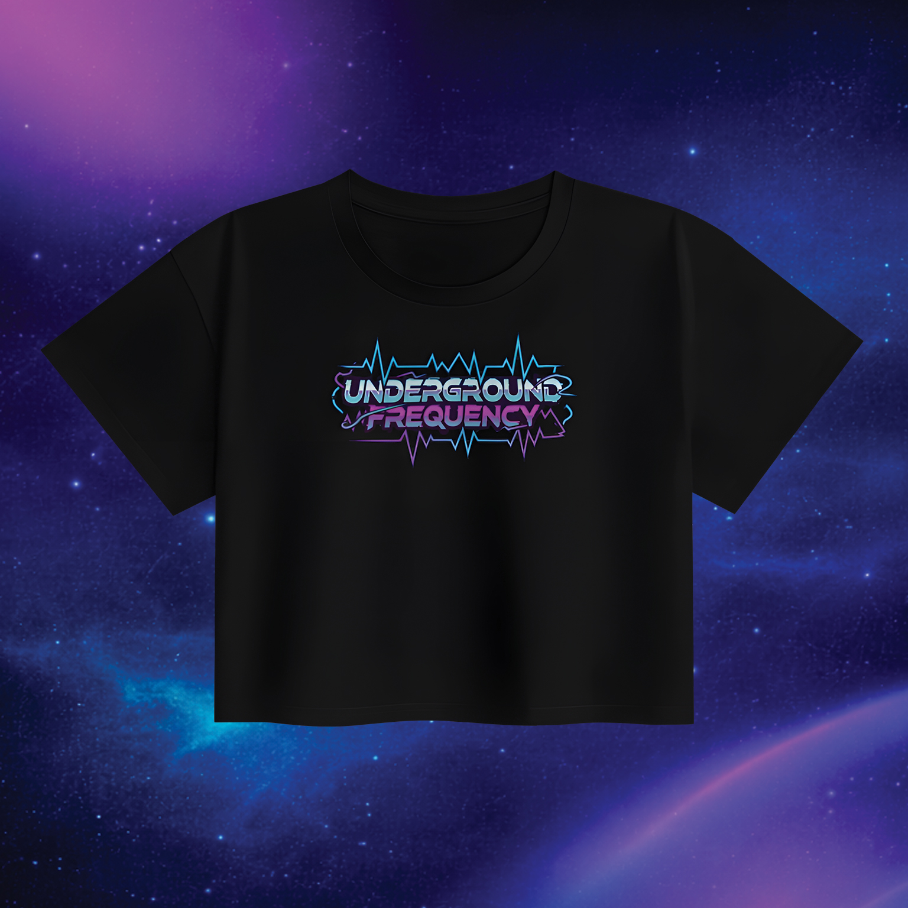
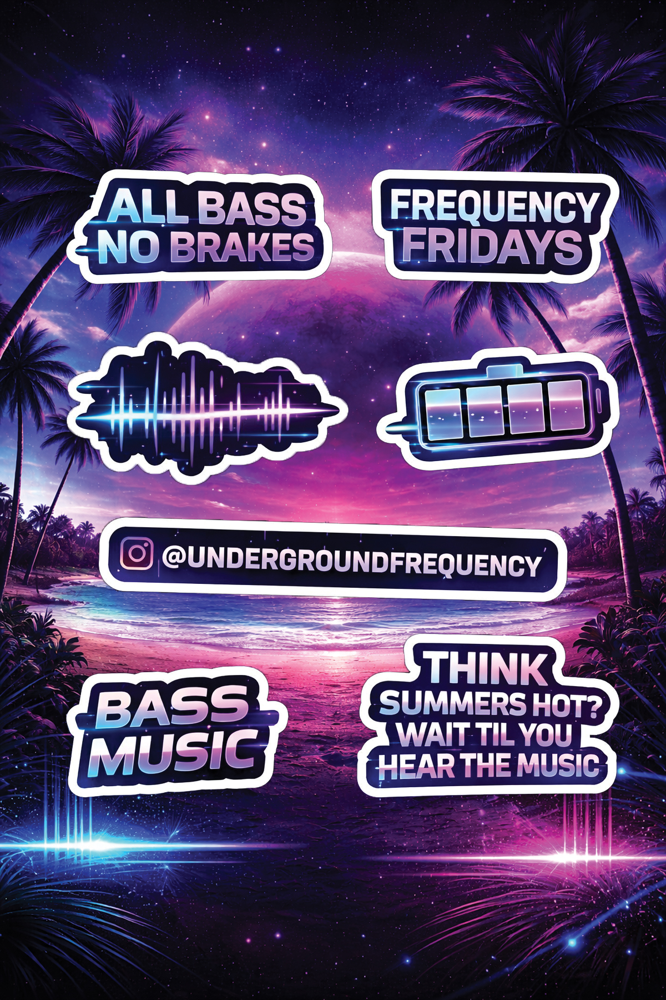
Melodic, progressive, and afro house at 128 BPM. Immersive sets designed to match the visuals: atmospheric, intentional, built for the long ride.
Wear the transmission. Merch is printed on-demand through Fourthwall. New drops follow each major event.
Shop The StoreFor bookings, brand collaborations, freelance design, or just to talk sound. Based in Frisco, TX. Transmitting worldwide.
DIRECT CHANNEL kitetsu.2022@gmail.com